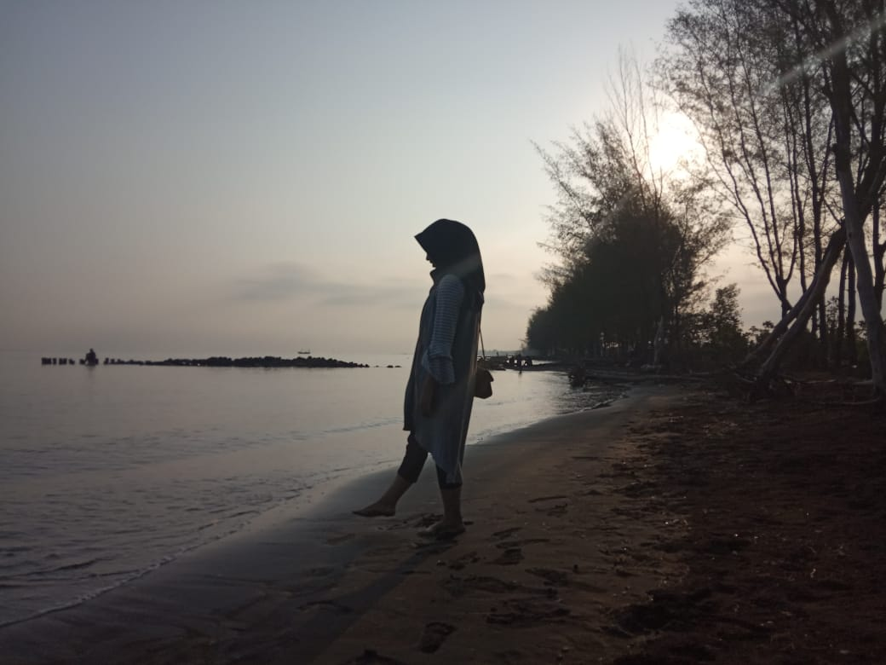

|  |
|
Hello Teman-teman... Selamat datang di website Yuliette Rindani :)
Pada website ini akan ada berbagai informasi yang akan saya share tentang Kota Pemalang.
Setiap daerah tentunya memiliki ciri khas dan keunikannya sendiri mulai dari adat istiadat, kebudayaan, destinasi wisata maupun
makanan khas daerahnya. |